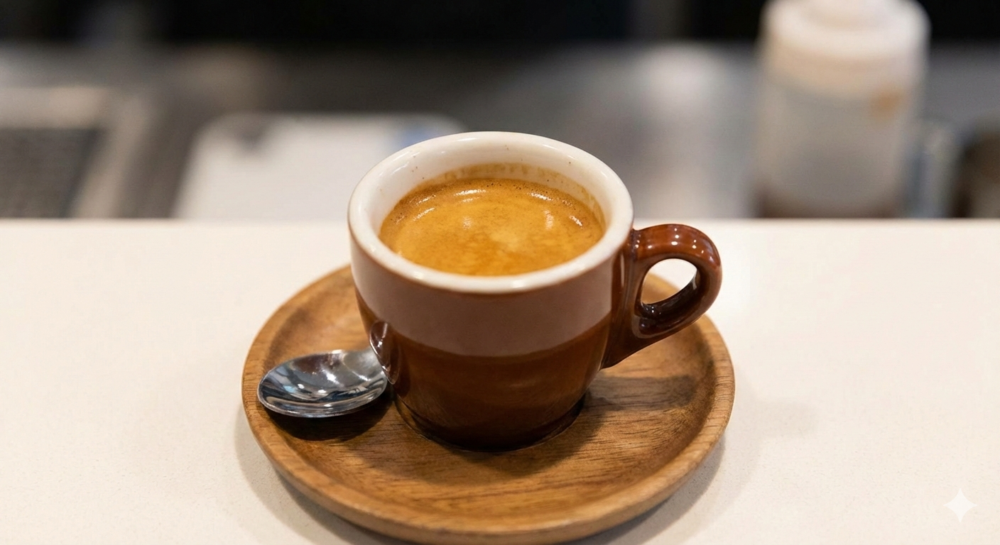
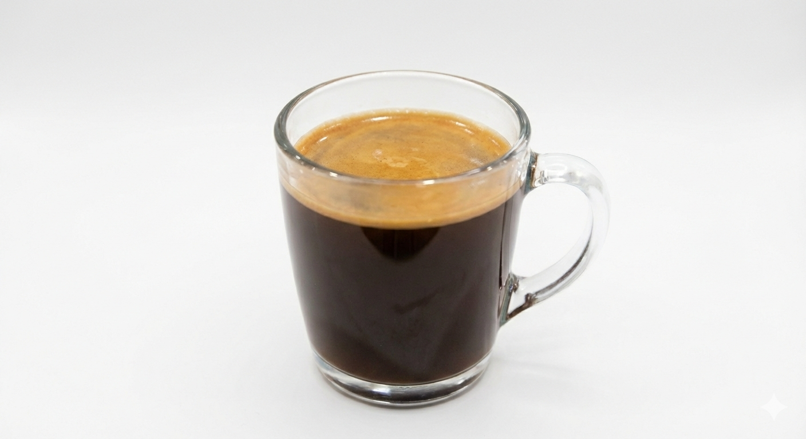

시간이 머무는 깊은 향기
성숙한 어른들의 휴식처, 커피의 깊은 이야기를 탐험하세요.
📜 커피의 역사
9세기 에티오피아 목동 칼디의 발견부터 현대의 에스프레소 문화까지, 커피는 인류와 함께 깊어왔습니다.
"이미지를 클릭하시면 제가 상세 정보를 설명해 드릴게요."
✨ 커피의 구성원

에스프레소
상세 정보 보기

아메리카노
상세 정보 보기카페라떼
상세 정보 보기🌱 원두 가이드
| 품종 | 특징 | 대표적인 맛 |
|---|---|---|
| 아라비카 | 고지대 재배, 향미가 섬세함 | 산뜻한 과일향, 산미 |
| 로부스타 | 병충해에 강함, 카페인 함량 높음 | 구수함, 묵직한 쓴맛 |
🎥 멀티미디어 가이드
frameborder="0"
allow="accelerometer; autoplay; clipboard-write; encrypted-media; gyroscope; picture-in-picture"
allowfullscreen>